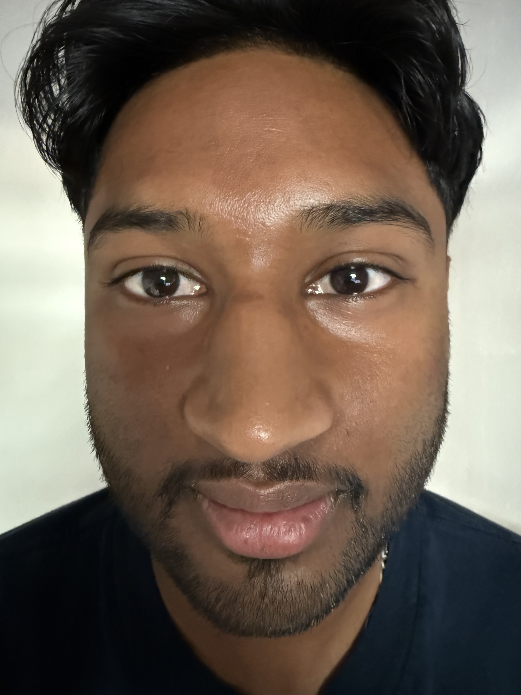
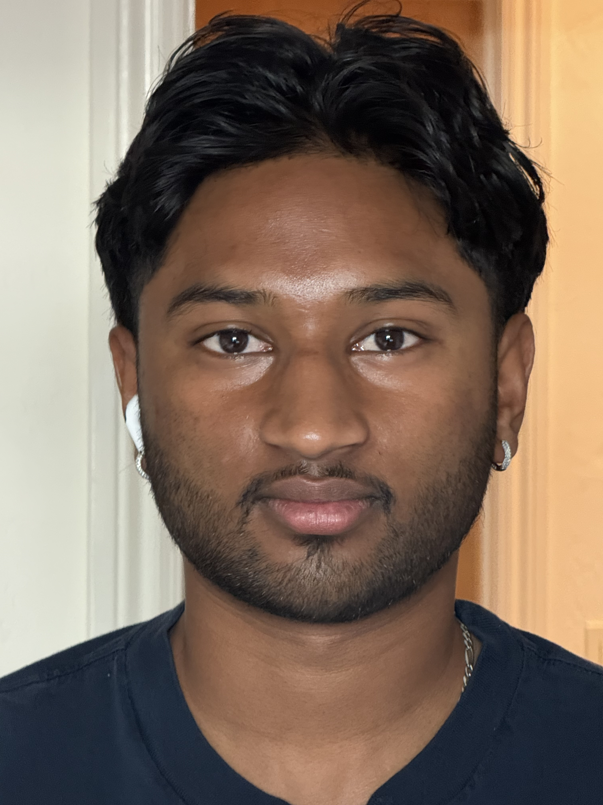
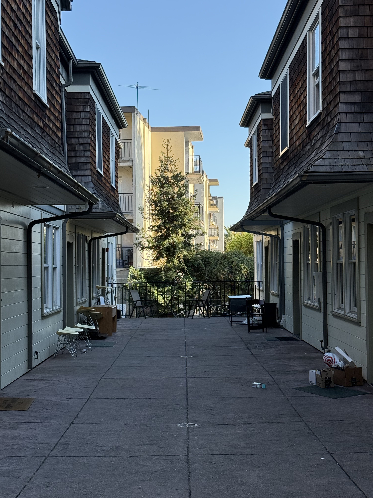

Part 1: Selfie: The Wrong Way vs. The Right Way

Figure 1: Picture taken the wrong way

Figure 2: Picture taken the right way
Left Image:
The image on the left is a picture that is taken up close with low zoom which causes distortion because the nose of the subject
is too close to the camera.
Right Image:
The image on the right is a picture that is taken at a distance with higher zoom. This allows the image to be more clear and has
the features of the subject to be equally distanced from the camera.
Part 2: Architectural Perspective Compression

Figure 3: At a distance and zoomed in

Figure 4: Walked forward and zoomed out
Left Image:
The image on the left is a picture that is taken further away with a higher zoom. This allows the image to be less distorted.
The higher focal length flattens the field of view which creates more even sized objects.
Right Image:
The image on the right is taken closer with lower zoom. This creates a more distorted images. This happens because the shorter
focal length causes the field of view to be more spherical and prononunces the 'curves' more.
Part 3: The Dolly Zoom
This gif is a dolly zoom of stuffed animals that starts up close with a low zoom and then moves away from the subject while zooming in.
The effect is created because while up close, the background is out of focus and the subject is in focus. When you step away while zooming in,
this takes that same area and focuses the background while also keeping the subject in focus. This creates a sense of the background changing and distorting while the subject remains the same.